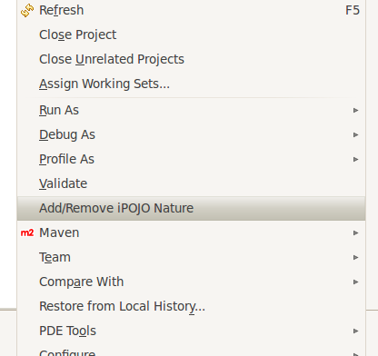
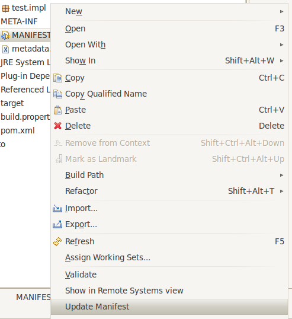

Set up the manipulator
Table of Contents
Using the iPOJO nature
Set up the an existing project
- To add or remove the iPOJO nature on a Java project,
right-click on the project and select Add/Remove
iPOJO Nature.

- Projects with the iPOJO nature have this project icon :
When does the manipulator do its job ?
The builder is called each time the Java plug-in (JDT) decides
to compile a project, that is to say :
- When a source file has been modified
- When a dependency or the build path has been modified (JAR
library, project, ...)
The builder is not called when the Manifest file is
modified.
One-shot manipulation
The builder can be run on project without the iPOJO nature or can be
forced : just right-click on the Manifest file and click on Update
Manifest. It is a one-shot manipulation.
